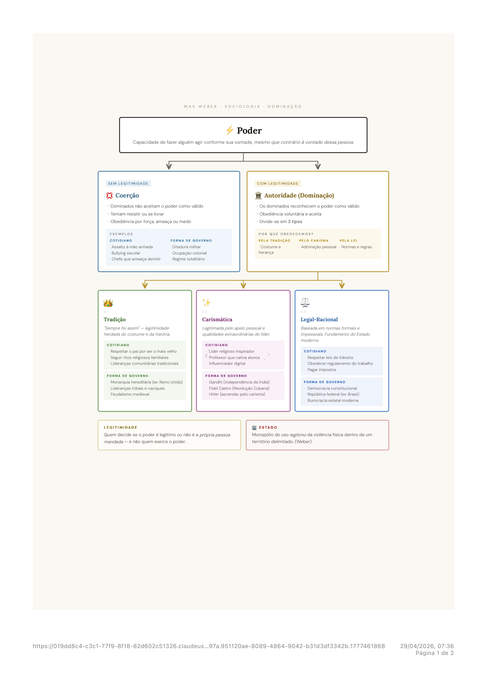
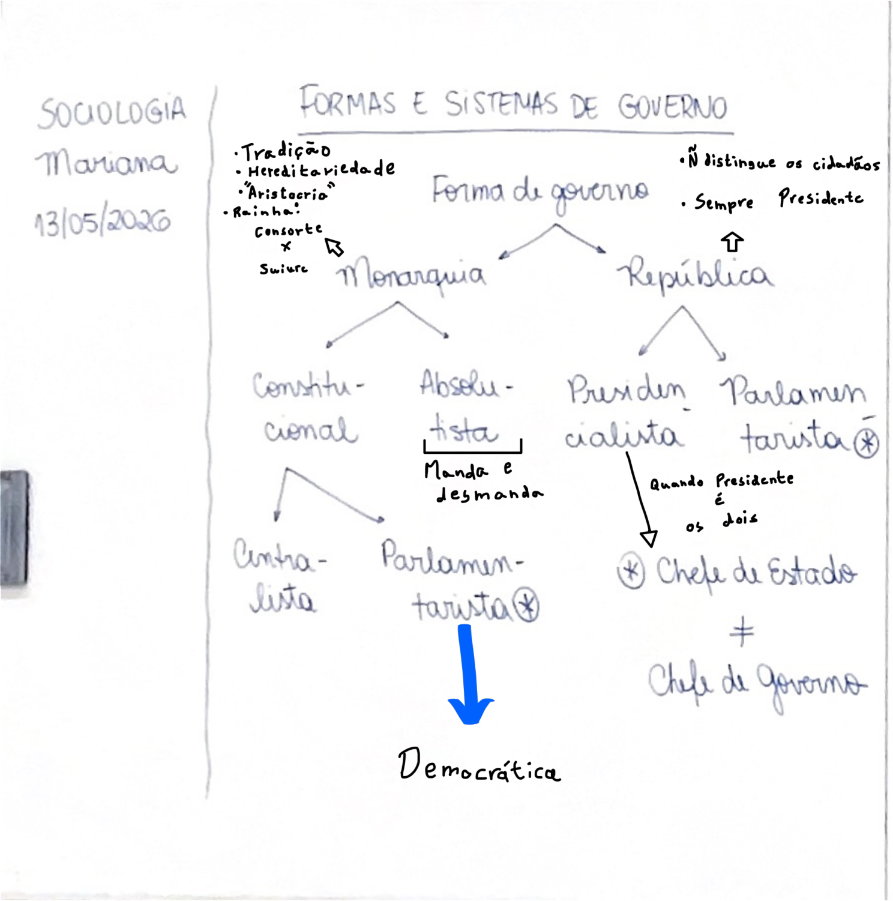

Cap. 1 Max Weber — Poder e Dominação

Para Weber, Poder é a capacidade de fazer alguém agir conforme a própria vontade, mesmo que contrário à vontade dessa pessoa. O poder em si não diz nada sobre legitimidade.
Sem Legitimidade — Coerção
- Obediência por força, ameaça ou medo
- Os dominados não aceitam o poder como válido
- Tentam resistir ou se libertar
Com Legitimidade — Autoridade (Dominação)
- Obediência voluntária
- Os dominados reconhecem e aceitam o poder como válido
- Estabilidade e menor necessidade de força
Weber identificou três fontes pelas quais o poder pode ser reconhecido como legítimo pelos dominados:
| Tipo | Base da Obediência | Exemplos Cotidianos | Forma de Governo |
|---|---|---|---|
| Tradicional | "Sempre foi assim" — costume e herança histórica. Autoridade sagrada pelos hábitos e tradições. | Pai que manda em casa, chefe de tribo, ancião da aldeia | Monarquia, Teocracia, Feudalismo, Oligarquia |
| Carismática | Qualidades pessoais extraordinárias do líder — admiração, devoção emocional, heroísmo percebido. | Líder religioso, pastor evangélico, celebridade, treinador inspirador | Líderes populistas (Lula, Bolsonaro, Hitler, Napoleão, Perón, Fidel Castro) |
| Legal-Racional | Regras impessoais escritas — a lei, não a pessoa. Obediência ao cargo, não ao indivíduo. Base da burocracia moderna. | Presidente eleito, juiz, fiscal, policial em serviço, funcionário público | República constitucional — presidencialismo e parlamentarismo |
Pontos centrais dessa definição:
- Monopólio: só o Estado tem o direito exclusivo de usar a força coercitiva — exército, polícia, prisão.
- Legítimo: a violência estatal é aceita como válida pela população — diferente de um grupo criminoso que também usa violência mas sem legitimidade.
- Território: o Estado tem jurisdição sobre um espaço geográfico delimitado.
- Violência física: não é que o Estado está sempre usando violência, mas que só ele tem o direito de fazê-lo em último recurso.
Cap. 2 Formas e Sistemas de Governo

A Monarquia é uma forma de governo em que o chefe de Estado é um monarca hereditário — sua posição deriva da tradição e da linhagem familiar, não de eleição.
| Tipo | Características | Exemplos |
|---|---|---|
| Monarquia Absoluta | Rei concentra todo o poder — legisla, executa e julga. Sem Constituição que o limite. "Manda e desmanda." | França de Luís XIV, Arábia Saudita (ainda hoje) |
| Monarquia Constitucional | Poder do rei limitado por uma Constituição. Existe Parlamento com poder real. Rei reina mas não governa sozinho. | Inglaterra pós Magna Carta, Espanha, Suécia, Bélgica |
| Monarquia Parlamentarista | Rei é Chefe de Estado (função simbólica e cerimonial). Primeiro-Ministro, eleito pelo Parlamento, é o Chefe de Governo real. | Reino Unido, Japão, Holanda, Suécia, Noruega |
A palavra República vem do latim res publica — "coisa pública". É uma forma de governo fundada na soberania popular, com mandatos eletivos e alternância de poder.
Dentro da República, o sistema de governo define como se organiza a relação entre Executivo e Legislativo:
Presidencialismo
- Presidente = Chefe de Estado e Chefe de Governo
- Eleito diretamente pelo povo
- Mandato fixo — não depende do Parlamento para governar
- Separação rígida entre Executivo e Legislativo
Parlamentarismo
- Presidente = Chefe de Estado (representação simbólica)
- Primeiro-Ministro = Chefe de Governo (eleito pelo Parlamento)
- Governo depende da confiança do Parlamento — pode ser derrubado por voto de desconfiança
- Fusão entre Executivo e Legislativo
No Brasil, o presidencialismo opera em um cenário de multipartidarismo extremo: dezenas de partidos no Congresso, nenhum com maioria sozinho. Isso cria um desafio estrutural para governar.
Presidencialismo de Coalizão
O conceito de "presidencialismo de coalizão" foi criado pelo cientista político Sérgio Abranches (1988) para descrever a situação brasileira: o presidente precisa montar uma coalizão de múltiplos partidos para ter maioria no Congresso e aprovar sua agenda.
- O presidente distribui ministérios e cargos para os partidos aliados em troca de apoio parlamentar — fenômeno chamado de loteamento de ministérios ou fisiologismo.
- Partidos aliados votam com o governo nos projetos, mas cobram favores em troca.
- A coalizão é frágil: um partido pode retirar o apoio a qualquer momento.
Quando a Coalizão Quebra — Crise de Governabilidade
A crise de governabilidade ocorre quando o presidente perde a maioria parlamentar e não consegue mais aprovar projetos de lei, reformas ou o orçamento. O governo fica paralisado.
| Consequência | Descrição |
|---|---|
| Paralisia legislativa | Governo não consegue aprovar pautas essenciais — reformas, orçamento, medidas provisórias caducam. |
| Instabilidade política | Ministros trocados, escândalos, vazamentos, perda de credibilidade. |
| Impeachment | Se o presidente perde apoio e há motivação jurídica, o Congresso pode abrir processo de impeachment. |
| Crise econômica | Incerteza política afugenta investimentos, derruba a moeda e eleva o risco-país. |
| Critério | Presidencialismo | Parlamentarismo |
|---|---|---|
| Chefe de Governo | Presidente (eleito pelo povo) | Primeiro-Ministro (indicado pelo Parlamento) |
| Chefe de Estado | Presidente (mesmo cargo) | Presidente ou Monarca (função simbólica) |
| Mandato | Fixo — não depende do Parlamento | Flexível — depende da confiança do Parlamento |
| Relação Executivo/Legislativo | Separação rígida | Fusão — governo nasce do Parlamento |
| Estabilidade | Alta (mandato garantido) | Baixa (governo pode cair a qualquer momento) |
| Crise de governabilidade | Mais grave — paralisia sem saída rápida | Resolvida com nova eleição ou governo |
| Exemplos | Brasil, EUA, Argentina | Reino Unido, Alemanha, Portugal, Japão |
Cap. 3 Formas de Estado & Separação dos Poderes
Não confunda com forma de governo (Cap. 2): a forma de Estado descreve como o poder se organiza territorialmente — se é concentrado no governo nacional ou dividido com unidades internas.
Estado Federal
- Governo nacional + unidades internas (estados, províncias) com autonomia própria
- As unidades podem tomar decisões políticas, financeiras e culturais próprias — nunca em âmbito nacional
- Ex.: leis estaduais, rodízio de carros em São Paulo, feriados regionais
Estado Unitário
- Governo nacional mais centralizado
- Decisões políticas, culturais e financeiras são tomadas a nível federal
- Ainda existem unidades internas (condados, municípios), mas só executam as decisões federais — não legislam sozinhas
Montesquieu partiu de uma constatação simples: o poder corrompe quem o exerce. Mesmo alguém com boas intenções no início tende a se corromper depois de acumular poder por tempo suficiente — e ele observava esse cenário justamente nas monarquias absolutistas, com todo o poder concentrado nas mãos do rei.
Sistema de freios e contrapesos (checks and balances): os três poderes fiscalizam e limitam uns aos outros, evitando que qualquer um deles se torne hegemônico.
Cap. 4 Os Três Poderes no Brasil
| Municipal | Estadual | Federal | |
|---|---|---|---|
| Executivo | Prefeito + Vice (eleitos) + Secretários (indicados) | Governador + Vice (eleitos) + Secretários (indicados) | Presidente + Vice (eleitos) + Ministros (indicados) |
| Legislativo | Vereadores → formam a Câmara Municipal | Deputados Estaduais → formam a Assembleia Legislativa (ALESP em SP) | Deputados Federais (Câmara) + Senadores (Senado) = Congresso Nacional |
| Judiciário | Sem divisão por esfera política — organizado por competência (veja abaixo) | ||
O Judiciário tem três objetivos centrais: garantir direitos individuais e coletivos, equilibrar os poderes (toda decisão do Executivo e do Legislativo pode ser levada à sua aprovação/revisão final) e resolver conflitos.
| Divisão | Cobre | % aprox. dos casos |
|---|---|---|
| Justiça Estadual | Conflitos do dia a dia que não são federais nem especializados — divórcio, pensão, direito do consumidor, homicídios | ~90% |
| Justiça Federal | Conflitos que envolvem a União, órgãos federais ou empresas públicas (INSS, Caixa) — tráfico internacional, invasão de terras indígenas, falsificação de dinheiro | ~10% |
Braços especializados — setores do sistema para contextos específicos:
| Justiça | Cuida de | Órgão máximo |
|---|---|---|
| Trabalho | Conflitos entre trabalhadores e empregadores | TST — Tribunal Superior do Trabalho |
| Eleitoral | Alistamento, votação, apuração e diplomação de eleitos | TSE — Tribunal Superior Eleitoral |
| Militar | Crimes militares — motins, corrupção nas Forças Armadas | STM — Superior Tribunal Militar |
O STF (Supremo Tribunal Federal) é a instância máxima do Judiciário brasileiro. Garante o cumprimento da Constituição Federal e julga presidentes, ministros e altas autoridades por meio do Foro Especial.
Judicialização da política: ocorre quando o STF decide grandes temas morais e sociais que, em tese, caberiam ao Legislativo. Isso acontece porque o Congresso, para não desagradar seus eleitores, evita votar sobre temas polêmicos (drogas, aborto) — uma omissão legislativa. Diante do silêncio, o STF é acionado e decide.
Exemplos: reconhecimento do casamento homoafetivo, descriminalização do porte de drogas para uso pessoal.
Defesa da judicialização
- O STF só está cumprindo seu papel constitucional: garantir direitos fundamentais e proteger a Constituição
Crítica à judicialização
- O STF invade a competência do Legislativo eleito pelo povo, "anulando" a representação popular e desequilibrando os poderes
Cap. 5 Partidos Políticos e Eleições
- Secreto — ninguém pode saber em quem você votou
- Universal e obrigatório — entre 18 e 70 anos (facultativo para 16-18 e 70+)
- Direto — sem intermediários, o voto vai direto ao candidato/partido
Elege quem vai administrar — vence o candidato com mais votos. Usado para Presidente, Governadores e Prefeitos.
| Tipo | Como funciona | Onde se aplica |
|---|---|---|
| Majoritário Simples (1 turno só) |
Vence quem tiver o maior percentual de votos, independente do número. Nunca tem 2º turno. | Senadores e prefeitos de municípios com menos de 200 mil habitantes |
| Majoritário Absoluto (pode ter 2º turno) |
Vence quem tiver mais da metade dos votos válidos (brancos e nulos não contam). Sem maioria absoluta no 1º turno, vai para o 2º turno. | Presidente, Governadores e prefeitos de cidades com +200 mil habitantes |
Elege quem vai legislar — vereadores e deputados. Diferente do majoritário, os votos tecnicamente não vão para candidatos, e sim para partidos, que depois escolhem seus melhores candidatos para preencher as cadeiras conquistadas.
- Os dois se afiliam ao partido X
- Recebem votos, tentando fazer o partido atingir o Quociente Eleitoral — a "nota de corte" que um partido precisa alcançar para ganhar uma cadeira
- Se o partido atinge o quociente (pode atingir mais de uma vez → mais de uma cadeira), são eleitos os candidatos com mais votos dentro do próprio partido
Dois jeitos de votar no sistema proporcional:
Voto Nominal
- Vota direto num candidato específico
Voto de Legenda
- Vota no partido (não num candidato)
- Contribui para o partido atingir o quociente, e vai indiretamente para o candidato mais votado do partido
Cap. 6 Democracia e Participação Política
Por isso o cientista político Robert Dahl criou o conceito de Poliarquia ("governo de muitos") — uma escala para descrever sistemas políticos conforme sua proximidade com a democracia, em vez de uma classificação binária.
Pilares de uma democracia plena — a democracia não é garantida só por uma Constituição no papel, mas por esses pilares na prática:
- Judiciário independente — decisões sem interferência de partidos, do Executivo ou de outras figuras políticas
- Liberdades civis e políticas — participação política garantida e respeitada; a população tem poder real de contestação
- Governo funcional e equilibrado — os três poderes em harmonia (freios e contrapesos funcionando), sem corrupção estrutural
- Mídia diversificada — sem mídia estatal única e dependente do governo; liberdade de expressão respeitada
Uma escala criada pela revista The Economist para quantificar e comparar o nível de democracia dos países — de 0,00 (autoritarismo absoluto) a 10,00 (democracia perfeita).
O índice avalia cinco dimensões: processo eleitoral e pluralismo (as eleições são justas e livres? há pluralidade de partidos?), funcionamento do governo (há equilíbrio entre os poderes? há corrupção?), participação política, cultura política (os cidadãos confiam nas instituições?) e liberdades civis.
| Plena | Imperfeita | Híbrida | Autoritária | |
|---|---|---|---|---|
| Processo Eleitoral | Livre e justo | Livre mas vulnerável | Fraudulento/irregular | Inexistente ou falso |
| Oposição Política | Governa em rodízio | Atua livremente | Sofre pressão/assédio | Ilegalizada ou presa |
| Poder Judiciário | Totalmente independente | Funcional | Parcialmente cooptado | Subordinado ao líder |
| Mídia e Imprensa | Diversa e independente | Sofre pressões menores | Assediada e censurada | Controlada pelo Estado |
Quiz de Revisão
28 questões sobre Weber, formas de governo, Estado, os três poderes, eleições e democracia.